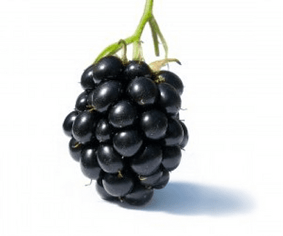
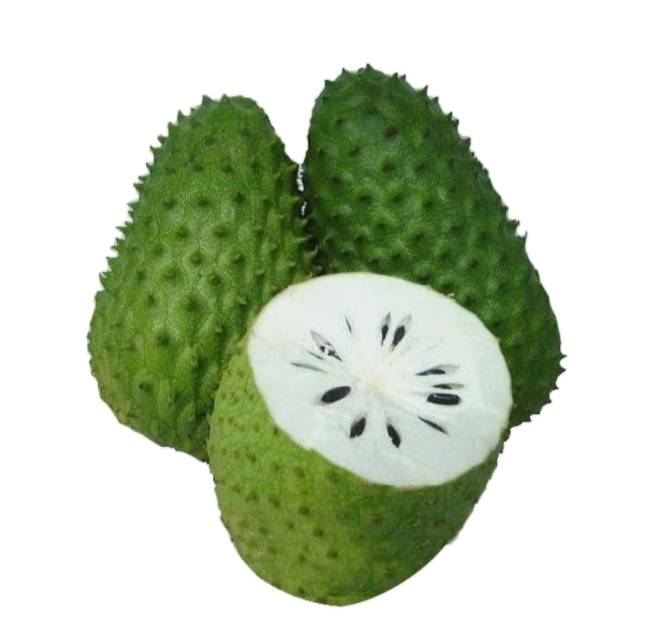

Frutas

Mora
Origen: Centro América
Caracteristicas:
- Miembro del genero rubus
- Cerca de 250 tipos de variacioneS
- Crecen principalmente en los valles y las colinas
Beneficios:
- Son muy ricas en vitamina c
- Reduce la absorción del hierro y ácido fólico
- Tiene propiedades reconstruyentes
- Protege la piel y mejora la visión nocturna
- Fuente de calcio, potasio y yodo
Leer mas
Mandarina
Origen: Asia
Caracteristicas:
- Su corteza es liza
- Se compone principalmente de agua 88% hidratos de carbono y fibra
- Tiene cuatro clasificaciones: citrus reticula var, clementina, citrus unshiu y clemenvillas
Beneficios:
- Aliada de las defensas frente a las gripes
- Combate la anemia
- Refuerza el sistema cardiovascular
- Elimina el ácido úrico
Leer mas
Banano
Origen: Asia
Caracteristicas:
- Es de forma lineal o falcada, entre cilíndrica y marcadamente angulosa
- La pulpa es blanca a amarilla, rica en almidón y dulce;
Beneficios:
- Combate el estreñimiento
- Promueve la pérdida de peso
- Ayuda a mejorar el estado de animo
- Protege el corazón
- Aporta vitamina A, vitamina C, ácido fólico, complejo B, vitamina E y azucares
Leer mas

Guanabana
Origen: Centro america
Caracteristicas:
- Pesa en promedio 2.9 Kg de, los cuales 75.6% corresponden a la pulpa, el 4.8% es semilla; el 12.7% corresponde a la cáscara y el 6.9 al raquis
- Sus frutos son dulces
Beneficios:
- Potente antioxidante
- Favorece la absorción del hierro
- Ayuda a la producción de colágen
- Ayuda a cicatrizar las herida
- Ayuda a cicatrizar las herida
- Te mantiene fresco y te da energía
Leer mas